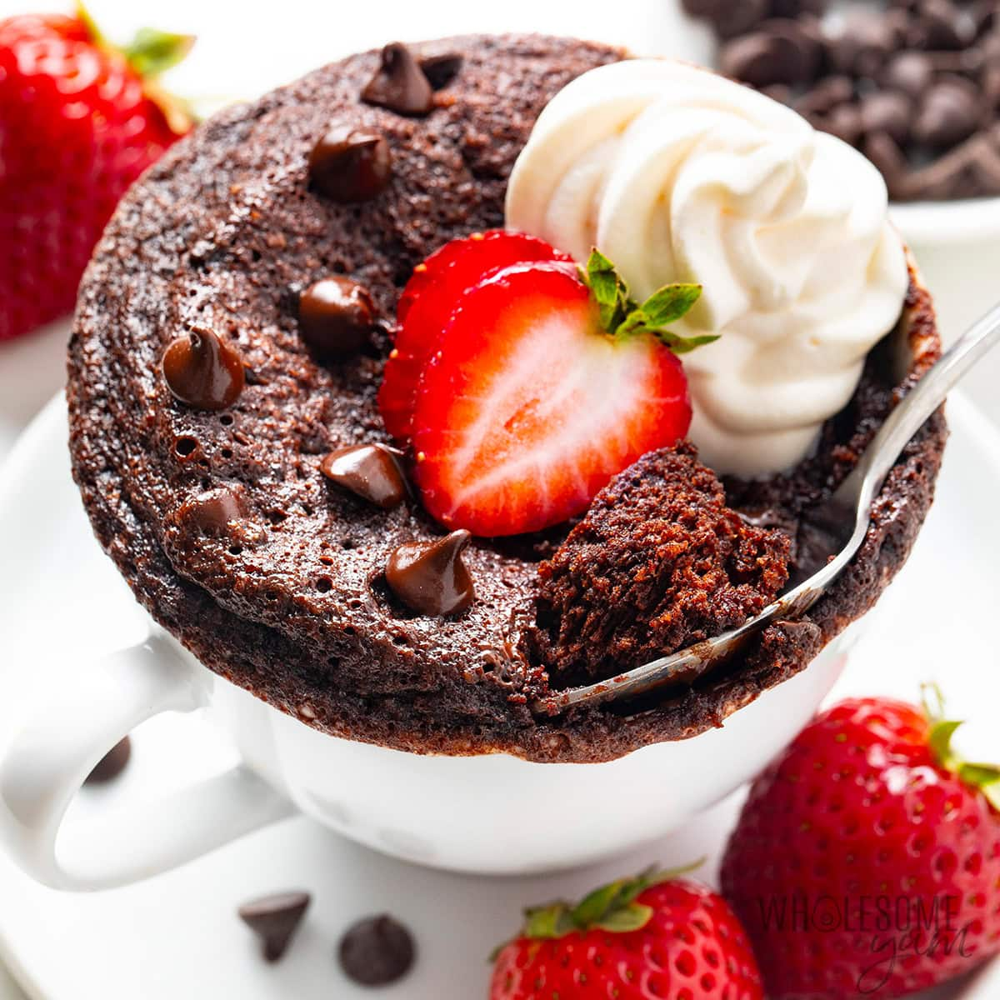

DESSERT: NUTELLA MUG CAKE
This warm nutella mug cake is rich, chocolatey, and ready to eat in just a few minutes. This late-night treat is great for when you're craving something sweet but don't have time to spend hours in the kitchen.

Image Credit: "Protein Mug Cake" by Maya Krampf at https://www.wholesomeyum.com/protein-mug-cake/.